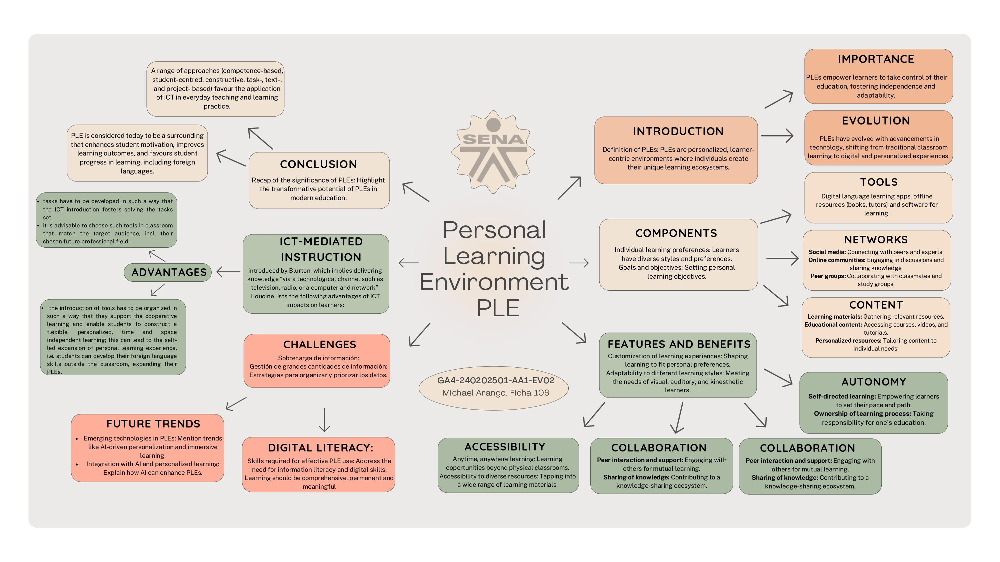

Critical Thinking and Media Literacy
In our fast-paced digital world, mastering critical thinking and media literacy is more crucial than ever. We need to navigate the sea of information with wisdom. Check out this eye-catching visual illustration

As this visual suggests, critical thinking involves asking questions, verifying information, and considering the source's credibility.
Crime and Punishment
"Crime and Punishment" by Fyodor Dostoevsky is a masterpiece delving into the depths of human morality. Below, you'll find a captivating image capturing the essence of the novel:

The novel challenges readers to contemplate the psychological turmoil of its protagonist, Raskolnikov, as he wrestles with the idea of justifying a heinous crime. Let's delve deeper into this literary gem.
Presentación. GA2-240202501-AA2-EV02
Video Entrevista - GA2-240202501-AA1-EV02
Video Presentación - GA1-240202501-AA1-EV02
Mapa mental PLE GA4-240202501-AA1-EV02
